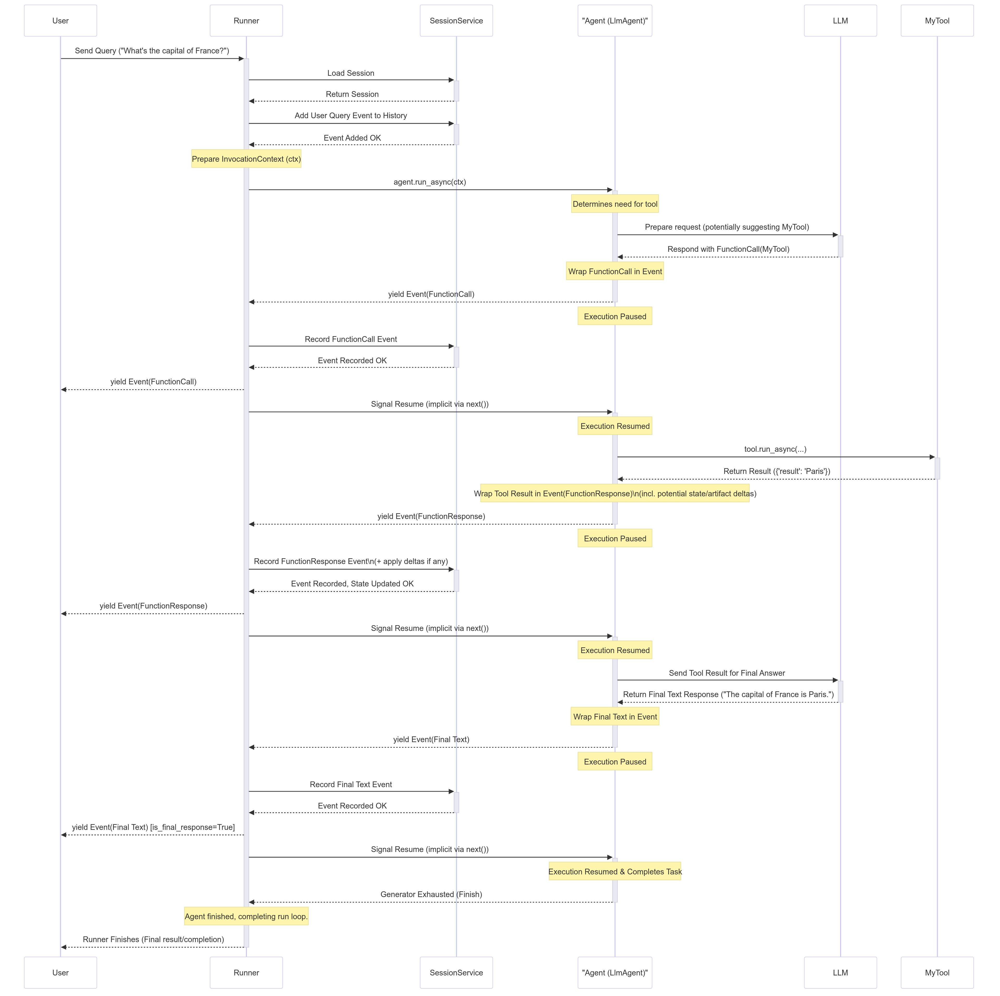

Runtime¶
What is runtime?¶
The ADK Runtime is the underlying engine that powers your agent application during user interactions. It's the system that takes your defined agents, tools, and callbacks and orchestrates their execution in response to user input, managing the flow of information, state changes, and interactions with external services like LLMs or storage.
Think of the Runtime as the "engine" of your agentic application. You define the parts (agents, tools), and the Runtime handles how they connect and run together to fulfill a user's request.
Core Idea: The Event Loop¶
At its heart, the ADK Runtime operates on an Event Loop. This loop facilitates a back-and-forth communication between the Runner component and your defined "Execution Logic" (which includes your Agents, the LLM calls they make, Callbacks, and Tools).

In simple terms:
- The
Runnerreceives a user query and asks the mainAgentto start processing. - The
Agent(and its associated logic) runs until it has something to report (like a response, a request to use a tool, or a state change) – it then yields anEvent. - The
Runnerreceives thisEvent, processes any associated actions (like saving state changes viaServices), and forwards the event onwards (e.g., to the user interface). - Only after the
Runnerhas processed the event does theAgent's logic resume from where it paused, now potentially seeing the effects of the changes committed by the Runner. - This cycle repeats until the agent has no more events to yield for the current user query.
This event-driven loop is the fundamental pattern governing how ADK executes your agent code.
The Heartbeat: The Event Loop - Inner workings¶
The Event Loop is the core operational pattern defining the interaction between the Runner and your custom code (Agents, Tools, Callbacks, collectively referred to as "Execution Logic" or "Logic Components" in the design document). It establishes a clear division of responsibilities:
Runner's Role (Orchestrator)¶
The Runner acts as the central coordinator for a single user invocation. Its responsibilities in the loop are:
- Initiation: Receives the end user's query (
new_message) and typically appends it to the session history via theSessionService. - Kick-off: Starts the event generation process by calling the main agent's execution method (e.g.,
agent_to_run.run_async(...)). - Receive & Process: Waits for the agent logic to
yieldanEvent. Upon receiving an event, the Runner promptly processes it. This involves:- Using configured
Services(SessionService,ArtifactService,MemoryService) to commit changes indicated inevent.actions(likestate_delta,artifact_delta). - Performing other internal bookkeeping.
- Using configured
- Yield Upstream: Forwards the processed event onwards (e.g., to the calling application or UI for rendering).
- Iterate: Signals the agent logic that processing is complete for the yielded event, allowing it to resume and generate the next event.
Conceptual Runner Loop:
# Simplified view of Runner's main loop logic
def run(new_query, ...) -> Generator[Event]:
# 1. Append new_query to session event history (via SessionService)
session_service.append_event(session, Event(author='user', content=new_query))
# 2. Kick off event loop by calling the agent
agent_event_generator = agent_to_run.run_async(context)
async for event in agent_event_generator:
# 3. Process the generated event and commit changes
session_service.append_event(session, event) # Commits state/artifact deltas etc.
# memory_service.update_memory(...) # If applicable
# artifact_service might have already been called via context during agent run
# 4. Yield event for upstream processing (e.g., UI rendering)
yield event
# Runner implicitly signals agent generator can continue after yielding
Execution Logic's Role (Agent, Tool, Callback)¶
Your code within agents, tools, and callbacks is responsible for the actual computation and decision-making. Its interaction with the loop involves:
- Execute: Runs its logic based on the current
InvocationContext, including the session state as it was when execution resumed. - Yield: When the logic needs to communicate (send a message, call a tool, report a state change), it constructs an
Eventcontaining the relevant content and actions, and thenyields this event back to theRunner. - Pause: Crucially, execution of the agent logic pauses immediately after the
yieldstatement. It waits for theRunnerto complete step 3 (processing and committing). - Resume: Only after the
Runnerhas processed the yielded event does the agent logic resume execution from the statement immediately following theyield. - See Updated State: Upon resumption, the agent logic can now reliably access the session state (
ctx.session.state) reflecting the changes that were committed by theRunnerfrom the previously yielded event.
Conceptual Execution Logic:
# Simplified view of logic inside Agent.run_async, callbacks, or tools
# ... previous code runs based on current state ...
# 1. Determine a change or output is needed, construct the event
# Example: Updating state
update_data = {'field_1': 'value_2'}
event_with_state_change = Event(
author=self.name,
actions=EventActions(state_delta=update_data),
content=types.Content(parts=[types.Part(text="State updated.")])
# ... other event fields ...
)
# 2. Yield the event to the Runner for processing & commit
yield event_with_state_change
# <<<<<<<<<<<< EXECUTION PAUSES HERE >>>>>>>>>>>>
# <<<<<<<<<<<< RUNNER PROCESSES & COMMITS THE EVENT >>>>>>>>>>>>
# 3. Resume execution ONLY after Runner is done processing the above event.
# Now, the state committed by the Runner is reliably reflected.
# Subsequent code can safely assume the change from the yielded event happened.
val = ctx.session.state['field_1']
# here `val` is guaranteed to be "value_2" (assuming Runner committed successfully)
print(f"Resumed execution. Value of field_1 is now: {val}")
# ... subsequent code continues ...
# Maybe yield another event later...
This cooperative yield/pause/resume cycle between the Runner and your Execution Logic, mediated by Event objects, forms the core of the ADK Runtime.
Key components of the Runtime¶
Several components work together within the ADK Runtime to execute an agent invocation. Understanding their roles clarifies how the event loop functions:
-
Runner¶- Role: The main entry point and orchestrator for a single user query (
run_async). - Function: Manages the overall Event Loop, receives events yielded by the Execution Logic, coordinates with Services to process and commit event actions (state/artifact changes), and forwards processed events upstream (e.g., to the UI). It essentially drives the conversation turn by turn based on yielded events. (Defined in
google.adk.runners.runner.py).
- Role: The main entry point and orchestrator for a single user query (
-
Execution Logic Components¶
- Role: The parts containing your custom code and the core agent capabilities.
- Components:
Agent(BaseAgent,LlmAgent, etc.): Your primary logic units that process information and decide on actions. They implement the_run_async_implmethod which yields events.Tools(BaseTool,FunctionTool,AgentTool, etc.): External functions or capabilities used by agents (oftenLlmAgent) to interact with the outside world or perform specific tasks. They execute and return results, which are then wrapped in events.Callbacks(Functions): User-defined functions attached to agents (e.g.,before_agent_callback,after_model_callback) that hook into specific points in the execution flow, potentially modifying behavior or state, whose effects are captured in events.- Function: Perform the actual thinking, calculation, or external interaction. They communicate their results or needs by yielding
Eventobjects and pausing until the Runner processes them.
-
Event¶- Role: The message passed back and forth between the
Runnerand the Execution Logic. - Function: Represents an atomic occurrence (user input, agent text, tool call/result, state change request, control signal). It carries both the content of the occurrence and the intended side effects (
actionslikestate_delta). (Defined ingoogle.adk.events.event.py).
- Role: The message passed back and forth between the
-
Services¶- Role: Backend components responsible for managing persistent or shared resources. Used primarily by the
Runnerduring event processing. - Components:
SessionService(BaseSessionService,InMemorySessionService, etc.): ManagesSessionobjects, including saving/loading them, applyingstate_deltato the session state, and appending events to theevent history.ArtifactService(BaseArtifactService,InMemoryArtifactService,GcsArtifactService, etc.): Manages the storage and retrieval of binary artifact data. Althoughsave_artifactis called via context during execution logic, theartifact_deltain the event confirms the action for the Runner/SessionService.MemoryService(BaseMemoryService, etc.): (Optional) Manages long-term semantic memory across sessions for a user.- Function: Provide the persistence layer. The
Runnerinteracts with them to ensure changes signaled byevent.actionsare reliably stored before the Execution Logic resumes.
- Role: Backend components responsible for managing persistent or shared resources. Used primarily by the
-
Session¶- Role: A data container holding the state and history for one specific conversation between a user and the application.
- Function: Stores the current
statedictionary, the list of all pastevents(event history), and references to associated artifacts. It's the primary record of the interaction, managed by theSessionService. (Defined ingoogle.adk.sessions.session.py).
-
Invocation¶- Role: A conceptual term representing everything that happens in response to a single user query, from the moment the
Runnerreceives it until the agent logic finishes yielding events for that query. - Function: An invocation might involve multiple agent runs (if using agent transfer or
AgentTool), multiple LLM calls, tool executions, and callback executions, all tied together by a singleinvocation_idwithin theInvocationContext.
- Role: A conceptual term representing everything that happens in response to a single user query, from the moment the
These players interact continuously through the Event Loop to process a user's request.
How It Works: A Simplified Invocation¶
Let's trace a simplified flow for a typical user query that involves an LLM agent calling a tool:

Step-by-Step Breakdown¶
- User Input: The User sends a query (e.g., "What's the capital of France?").
- Runner Starts:
Runner.run_asyncbegins. It interacts with theSessionServiceto load the relevantSessionand adds the user query as the firstEventto the session history. AnInvocationContext(ctx) is prepared. - Agent Execution: The
Runnercallsagent.run_async(ctx)on the designated root agent (e.g., anLlmAgent). - LLM Call (Example): The
Agent_Llmdetermines it needs information, perhaps by calling a tool. It prepares a request for theLLM. Let's assume the LLM decides to callMyTool. - Yield FunctionCall Event: The
Agent_Llmreceives theFunctionCallresponse from the LLM, wraps it in anEvent(author='Agent_Llm', content=Content(parts=[Part(function_call=...)])), andyields this event. - Agent Pauses: The
Agent_Llm's execution pauses immediately after theyield. - Runner Processes: The
Runnerreceives the FunctionCall event. It passes it to theSessionServiceto record it in the history. TheRunnerthen yields the event upstream to theUser(or application). - Agent Resumes: The
Runnersignals that the event is processed, andAgent_Llmresumes execution. - Tool Execution: The
Agent_Llm's internal flow now proceeds to execute the requestedMyTool. It callstool.run_async(...). - Tool Returns Result:
MyToolexecutes and returns its result (e.g.,{'result': 'Paris'}). - Yield FunctionResponse Event: The agent (
Agent_Llm) wraps the tool result into anEventcontaining aFunctionResponsepart (e.g.,Event(author='Agent_Llm', content=Content(role='user', parts=[Part(function_response=...)]))). This event might also containactionsif the tool modified state (state_delta) or saved artifacts (artifact_delta). The agentyields this event. - Agent Pauses:
Agent_Llmpauses again. - Runner Processes:
Runnerreceives the FunctionResponse event. It passes it toSessionServicewhich applies anystate_delta/artifact_deltaand adds the event to history.Runneryields the event upstream. - Agent Resumes:
Agent_Llmresumes, now knowing the tool result and any state changes are committed. - Final LLM Call (Example):
Agent_Llmsends the tool result back to theLLMto generate a natural language response. - Yield Final Text Event:
Agent_Llmreceives the final text from theLLM, wraps it in anEvent(author='Agent_Llm', content=Content(parts=[Part(text=...)])), andyields it. - Agent Pauses:
Agent_Llmpauses. - Runner Processes:
Runnerreceives the final text event, passes it toSessionServicefor history, and yields it upstream to theUser. This is likely marked as theis_final_response(). - Agent Resumes & Finishes:
Agent_Llmresumes. Having completed its task for this invocation, itsrun_asyncgenerator finishes. - Runner Completes: The
Runnersees the agent's generator is exhausted and finishes its loop for this invocation.
This yield/pause/process/resume cycle ensures that state changes are consistently applied and that the execution logic always operates on the most recently committed state after yielding an event.
Important Runtime Behaviors¶
Understanding a few key aspects of how the ADK Runtime handles state, streaming, and asynchronous operations is crucial for building predictable and efficient agents.
State Updates & Commitment Timing¶
-
The Rule: When your code (in an agent, tool, or callback) modifies the session state (e.g.,
context.state['my_key'] = 'new_value'), this change is initially recorded locally within the currentInvocationContext. The change is only guaranteed to be persisted (saved by theSessionService) after theEventcarrying the correspondingstate_deltain itsactionshas beenyield-ed by your code and subsequently processed by theRunner. -
Implication: Code that runs after resuming from a
yieldcan reliably assume that the state changes signaled in the yielded event have been committed.
# Inside agent logic (conceptual)
# 1. Modify state
ctx.session.state['status'] = 'processing'
event1 = Event(..., actions=EventActions(state_delta={'status': 'processing'}))
# 2. Yield event with the delta
yield event1
# --- PAUSE --- Runner processes event1, SessionService commits 'status' = 'processing' ---
# 3. Resume execution
# Now it's safe to rely on the committed state
current_status = ctx.session.state['status'] # Guaranteed to be 'processing'
print(f"Status after resuming: {current_status}")
"Dirty Reads" of Session State¶
- Definition: While commitment happens after the yield, code running later within the same invocation, but before the state-changing event is actually yielded and processed, can often see the local, uncommitted changes. This is sometimes called a "dirty read".
- Example:
# Code in before_agent_callback
callback_context.state['field_1'] = 'value_1'
# State is locally set to 'value_1', but not yet committed by Runner
# ... agent runs ...
# Code in a tool called later *within the same invocation*
# Readable (dirty read), but 'value_1' isn't guaranteed persistent yet.
val = tool_context.state['field_1'] # 'val' will likely be 'value_1' here
print(f"Dirty read value in tool: {val}")
# Assume the event carrying the state_delta={'field_1': 'value_1'}
# is yielded *after* this tool runs and is processed by the Runner.
- Implications:
- Benefit: Allows different parts of your logic within a single complex step (e.g., multiple callbacks or tool calls before the next LLM turn) to coordinate using state without waiting for a full yield/commit cycle.
- Caveat: Relying heavily on dirty reads for critical logic can be risky. If the invocation fails before the event carrying the
state_deltais yielded and processed by theRunner, the uncommitted state change will be lost. For critical state transitions, ensure they are associated with an event that gets successfully processed.
Streaming vs. Non-Streaming Output (partial=True)¶
This primarily relates to how responses from the LLM are handled, especially when using streaming generation APIs.
- Streaming: The LLM generates its response token-by-token or in small chunks.
- The framework (often within
BaseLlmFlow) yields multipleEventobjects for a single conceptual response. Most of these events will havepartial=True. - The
Runner, upon receiving an event withpartial=True, typically forwards it immediately upstream (for UI display) but skips processing itsactions(likestate_delta). - Eventually, the framework yields a final event for that response, marked as non-partial (
partial=Falseor implicitly viaturn_complete=True). - The
Runnerfully processes only this final event, committing any associatedstate_deltaorartifact_delta. - Non-Streaming: The LLM generates the entire response at once. The framework yields a single event marked as non-partial, which the
Runnerprocesses fully. - Why it Matters: Ensures that state changes are applied atomically and only once based on the complete response from the LLM, while still allowing the UI to display text progressively as it's generated.
Async is Primary (run_async)¶
- Core Design: The ADK Runtime is fundamentally built on Python's
asynciolibrary to handle concurrent operations (like waiting for LLM responses or tool executions) efficiently without blocking. - Main Entry Point:
Runner.run_asyncis the primary method for executing agent invocations. All core runnable components (Agents, specific flows) useasync defmethods internally. - Synchronous Convenience (
run): A synchronousRunner.runmethod exists mainly for convenience (e.g., in simple scripts or testing environments). However, internally,Runner.runtypically just callsRunner.run_asyncand manages the async event loop execution for you. - Developer Experience: You should generally design your application logic (e.g., web servers using ADK) using
asyncio. - Sync Callbacks/Tools: The framework aims to handle both
async defand regulardeffunctions provided as tools or callbacks seamlessly. Long-running synchronous tools or callbacks, especially those performing blocking I/O, can potentially block the mainasyncioevent loop. The framework might use mechanisms likeasyncio.to_threadto mitigate this by running such blocking synchronous code in a separate thread pool, preventing it from stalling other asynchronous tasks. CPU-bound synchronous code, however, will still block the thread it runs on.
Understanding these behaviors helps you write more robust ADK applications and debug issues related to state consistency, streaming updates, and asynchronous execution.